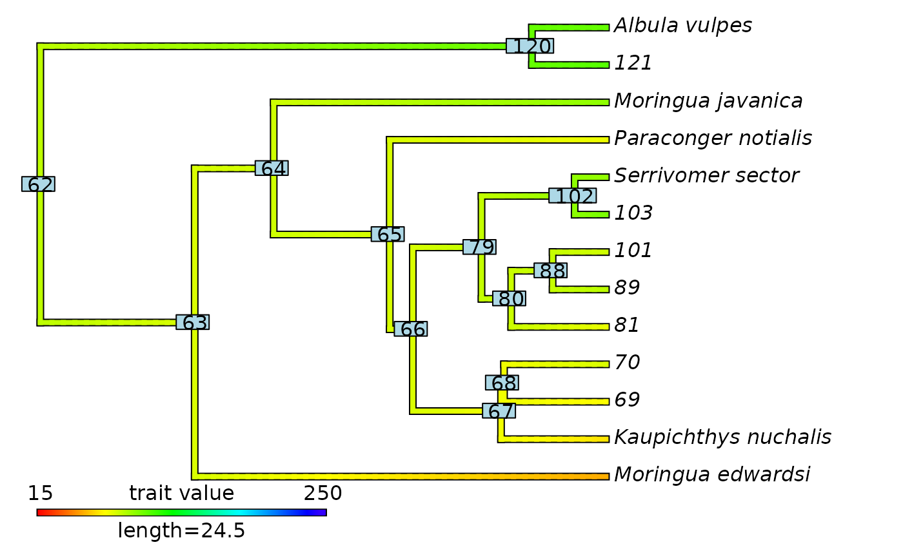
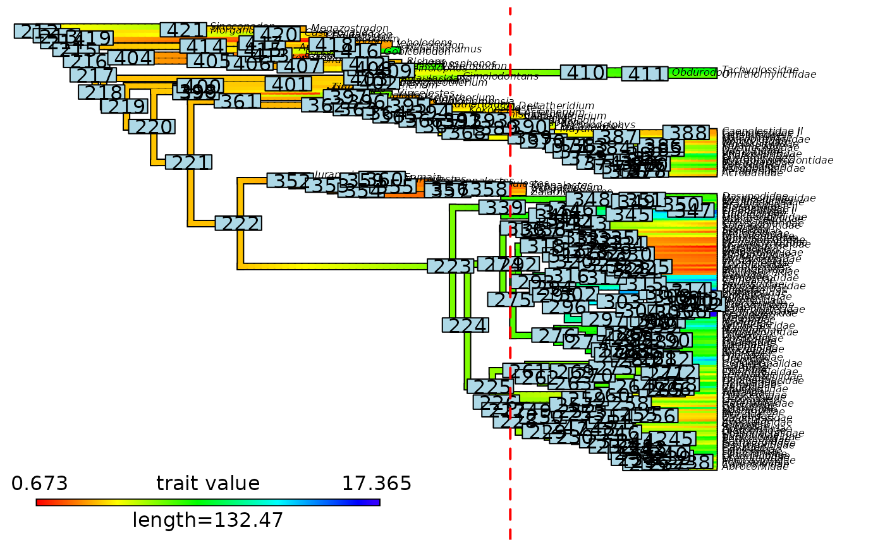
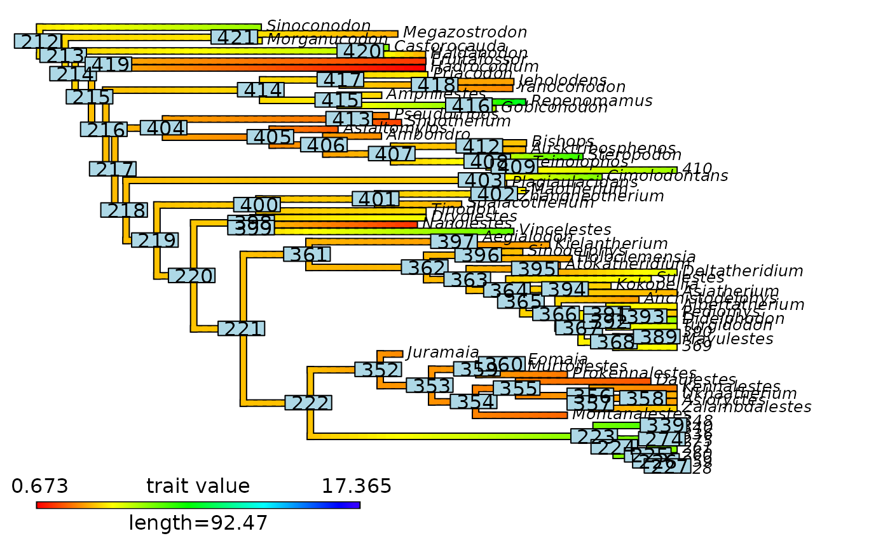

Extract continuous trait data mapped on a phylogeny at a given time in the past
Source:R/extract_most_likely_trait_values_for_focal_time.R
extract_most_likely_trait_values_from_contMap_for_focal_time.RdExtracts the most likely trait values found along branches
at a specific time in the past (i.e. the focal_time).
Optionally, the function can update the mapped phylogeny (contMap) such as
branches overlapping the focal_time are shorten to the focal_time, and
the continuous trait mapping for the cut off branches are removed
by updating the $tree$maps and $tree$mapped.edge elements.
Usage
extract_most_likely_trait_values_from_contMap_for_focal_time(
contMap,
ace = NULL,
tip_data = NULL,
focal_time,
update_contMap = FALSE,
keep_tip_labels = TRUE
)Arguments
- contMap
Object of class
"contMap", typically generated withprepare_trait_data()orphytools::contMap(), that contains a phylogenetic tree and associated continuous trait mapping. The phylogenetic tree must be rooted and fully resolved/dichotomous, but it does not need to be ultrametric (it can includes fossils).- ace
Named numeric vector (Optional). Ancestral Character Estimates (ACE) of the internal nodes, typically generated with
phytools::fastAnc(),phytools::anc.ML(), orape::ace(). Names are nodes_ID of the internal nodes. Values are ACE of the trait. Needed to provide accurate estimates of trait values.- tip_data
Named numeric vector (Optional). Tip values of the trait. Names are nodes_ID of the internal nodes. Needed to provide accurate tip values.
- focal_time
Integer. The time, in terms of time distance from the present, at which the tree and mapping must be cut. It must be smaller than the root age of the phylogeny.
- update_contMap
Logical. Specify whether the mapped phylogeny (
contMap) provided as input should be updated for visualization and returned among the outputs. Default isFALSE. The update consists in cutting off branches and mapping that are younger than thefocal_time.- keep_tip_labels
Logical. Specify whether terminal branches with a single descendant tip must retained their initial
tip.labelon the updated contMap. Default isTRUE. Used only ifupdate_contMap = TRUE.
Value
By default, the function returns a list with three elements.
$trait_dataA named numerical vector with ML trait values found along branches overlapping thefocal_time. Names are the tip.label/tipward node ID.$focal_timeInteger. The time, in terms of time distance from the present, at which the trait data were extracted.$trait_data_typeCharacter string. Define the type of trait data as "continuous". Used in downstream analyses to select appropriate statistical processing.
If update_contMap = TRUE, the output is a list with four elements: $trait_data, $focal_time, $trait_data_type, and $contMap.
$contMapAn object of class that contains the updatedcontMapwith branches and mapping that are younger than thefocal_timecut off. The function also adds multiple useful sub-elements to the$contMap$treeelement.$root_ageInteger. Stores the age of the root of the tree.$nodes_ID_dfData.frame with two columns. Provides the conversion from thenew_node_IDto theinitial_node_ID. Each row is a node.$initial_nodes_IDVector of character strings. Provides the initial ID of internal nodes. Used to plot internal node IDs as labels withape::nodelabels().$edges_ID_dfData.frame with two columns. Provides the conversion from thenew_edge_IDto theinitial_edge_ID. Each row is an edge/branch.$initial_edges_IDVector of character strings. Provides the initial ID of edges/branches. Used to plot edge/branch IDs as labels withape::edgelabels().
Details
The mapped phylogeny (contMap) is cut at a specific time in the past
(i.e. the focal_time) and the current trait values of the overlapping edges/branches are extracted.
—– Extract trait_data —–
If providing only the contMap trait values at tips and internal nodes will be extracted from
the mapping of the contMap leading to a slight dependency with the actual tip data
and estimated ancestral character values.
True ML estimates will be used if tip_data and/or ace are provided as optional inputs.
In practice the discrepancy is negligible.
—– Update the contMap —–
To obtain an updated contMap alongside the trait data, set update_contMap = TRUE.
The update consists in cutting off branches and mapping that are younger than the focal_time.
When a branch with a single descendant tip is cut and
keep_tip_labels = TRUE, the leaf left is labeled with the tip.label of the unique descendant tip.When a branch with a single descendant tip is cut and
keep_tip_labels = FALSE, the leaf left is labeled with the node ID of the unique descendant tip.In all cases, when a branch with multiple descendant tips (i.e., a clade) is cut, the leaf left is labeled with the node ID of the MRCA of the cut-off clade.
The continuous trait mapping contMap ($tree$maps and $tree$mapped.edge) is updated accordingly by removing mapping associated with the cut off branches.
See also
cut_phylo_for_focal_time() cut_contMap_for_focal_time()
Associated main function: extract_most_likely_trait_values_for_focal_time()
Sub-functions for other types of trait data:
extract_most_likely_states_from_densityMaps_for_focal_time()
extract_most_likely_ranges_from_densityMaps_for_focal_time()
Examples
# ----- Example 1: Only extent taxa (Ultrametric tree) ----- #
## Prepare data
# Load eel data from the R package phytools
# Source: Collar et al., 2014; DOI: 10.1038/ncomms6505
library(phytools)
data(eel.tree)
data(eel.data)
# Extract body size
eel_data <- setNames(eel.data$Max_TL_cm,
rownames(eel.data))
# Get Ancestral Character Estimates based on a Brownian Motion model
# To obtain values at internal nodes
eel_ACE <- phytools::fastAnc(tree = eel.tree, x = eel_data)
# Run a Stochastic Mapping based on a Brownian Motion model
# to interpolate values along branches and obtain a "contMap" object
eel_contMap <- phytools::contMap(eel.tree, x = eel_data,
res = 100, # Number of time steps
plot = FALSE)
# Set focal time to 50 Mya
focal_time <- 50
## Extract trait data and update contMap for the given focal_time
# Extract from the contMap (values are not exact ML estimates)
eel_test <- extract_most_likely_trait_values_from_contMap_for_focal_time(
contMap = eel_contMap,
focal_time = focal_time,
update_contMap = TRUE)
#> WARNING: No ancestral character estimates (ace) for internal nodes have been provided. Using values interpolated in the contMap instead.
#> WARNING: No tip data have been provided. Using values interpolated in the contMap instead.
# Extract from tip data and ML estimates of ancestral characters (values are true ML estimates)
eel_test <- extract_most_likely_trait_values_from_contMap_for_focal_time(
contMap = eel_contMap,
ace = eel_ACE, tip_data = eel_data,
focal_time = focal_time,
update_contMap = TRUE)
#> Warning: Values in 'tip_data' are not ordered as tip labels in the contMap$tree.
#> They were reordered to follow tip labels.
## Visualize outputs
# Print trait data
eel_test$trait_data
#> Moringua_edwardsi Kaupichthys_nuchalis 69
#> 52.70485 65.25449 71.66003
#> 70 81 89
#> 79.15280 76.11928 86.04101
#> 101 103 Serrivomer_sector
#> 82.04332 100.55349 94.72769
#> Paraconger_notialis Moringua_javanica 121
#> 75.04175 95.62468 108.30889
#> Albula_vulpes
#> 105.09029
# Plot node labels on initial stochastic map with cut-off
plot(eel_contMap, fsize = c(0.5, 1))
ape::nodelabels()
abline(v = max(phytools::nodeHeights(eel_contMap$tree)[,2]) - focal_time,
col = "red", lty = 2, lwd = 2)
 # Plot updated contMap with initial node labels
plot(eel_test$contMap)
ape::nodelabels(text = eel_test$contMap$tree$initial_nodes_ID)
# Plot updated contMap with initial node labels
plot(eel_test$contMap)
ape::nodelabels(text = eel_test$contMap$tree$initial_nodes_ID)

# ----- Example 2: Include fossils (Non-ultrametric tree) ----- #
## Test with non-ultrametric trees like mammals in motmot
## Prepare data
# Load mammals phylogeny and data from the R package motmot included within deepSTRAPP
# Data source: Slater, 2013; DOI: 10.1111/2041-210X.12084
data("mammals", package = "deepSTRAPP")
mammals_tree <- mammals$mammal.phy
mammals_data <- setNames(object = mammals$mammal.mass$mean,
nm = row.names(mammals$mammal.mass))[mammals_tree$tip.label]
# Get Ancestral Character Estimates based on a Brownian Motion model
# To obtain values at internal nodes
mammals_ACE <- phytools::fastAnc(tree = mammals_tree, x = mammals_data)
# Run a Stochastic Mapping based on a Brownian Motion model
# to interpolate values along branches and obtain a "contMap" object
mammals_contMap <- phytools::contMap(mammals_tree, x = mammals_data,
res = 100, # Number of time steps
plot = FALSE)
# Set focal time to 80 Mya
focal_time <- 80
## Extract trait data and update contMap for the given focal_time
# Extract from the contMap (values are not exact ML estimates)
mammals_test <- extract_most_likely_trait_values_from_contMap_for_focal_time(
contMap = mammals_contMap,
focal_time = focal_time,
update_contMap = TRUE)
#> WARNING: No ancestral character estimates (ace) for internal nodes have been provided. Using values interpolated in the contMap instead.
#> WARNING: No tip data have been provided. Using values interpolated in the contMap instead.
# Extract from tip data and ML estimates of ancestral characters (values are true ML)
mammals_test <- extract_most_likely_trait_values_from_contMap_for_focal_time(
contMap = mammals_contMap,
ace = mammals_ACE, tip_data = mammals_data,
focal_time = focal_time,
update_contMap = TRUE)
## Visualize outputs
# Print trait data
mammals_test$trait_data
#> 228 259 260 261 275
#> 6.137951 6.168691 6.097873 6.486549 7.170284
#> 336 340 348 Zalambdalestes Asioryctes
#> 6.698360 7.821992 7.708320 3.930633 3.207854
#> Ukhaatherium Kennalestes 369 Mayulestes 390
#> 3.393016 2.681356 4.747897 4.935456 4.582359
#> Turgidodon Didelphodon Pediomys Albertatherium Asiatherium
#> 5.091326 6.097774 3.914626 4.448219 3.558069
#> Deltatheridium 410
#> 5.057019 6.170591
# Plot node labels on initial stochastic map with cut-off
phytools::plot.contMap(mammals_contMap, fsize = c(0.5, 1))
ape::nodelabels()
abline(v = max(phytools::nodeHeights(mammals_contMap$tree)[,2]) - focal_time,
col = "red", lty = 2, lwd = 2)

# Plot updated contMap with initial node labels
phytools::plot.contMap(mammals_test$contMap, fsize = c(0.8, 1))
ape::nodelabels(text = mammals_test$contMap$tree$initial_nodes_ID)
